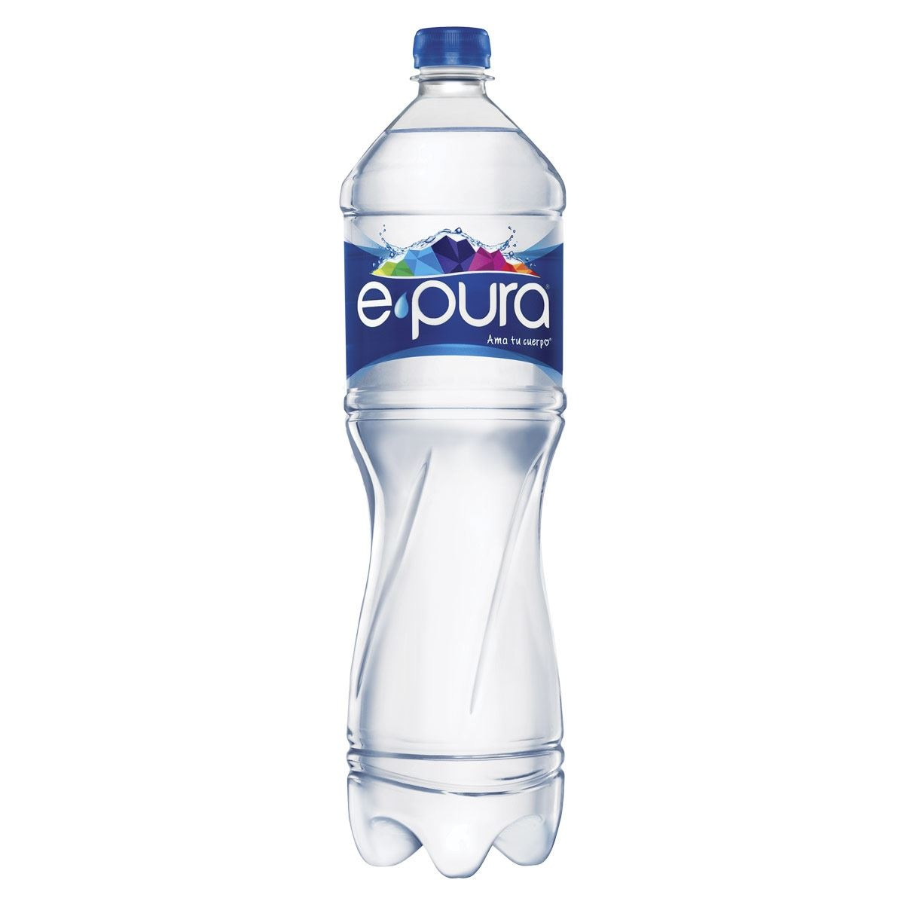

1.
Agua de Horchata UV

El agua de horchata es una verdera maravilla en cualquier temporada del año, ya aque no sólo refresca, también es
cremosa y dulce, combinación perfecta para disfrutar sola o en compañía de alimentos.
Recomendación: Agua de Horchata
2.
Agua de jamaica UV

Todos la hemos probado, su color intenso y su sabor ligeramente acidulado, hacen que el agua de jamaica sea la favorita
de nuestro país
Recomendación: Agua de jamaica
3.
Tasa de Café UV

Uno de los tipos de café más básicos y sencillos, únicamente consta de un infusión de café la cual se realiza hirviendo
agua en contacto con el grano. Se puede preparar en pocos segundos. Se trata de un tipo de café corto, y su tamaño suele
ser de alrededor de 30 cl. Es habitual el uso de café de la variante arábiga. Habitualmente suele tener algo de espuma
por encima.
Recomendación: Expresso
4.
Agua embotellada
El agua embotellada ha ido creciendo en popularidad. La gente parece favorecer el sabor y la comodidad que este producto
puede ofrecer. Es un agua que se purifica, se hace segura para beber, se pone en envases de vidrio o plástico y se
sella. Ha sido una buena elección de bebida para la hidratación y para muchos otros fines de salud.
Recomendación: Agua epura
